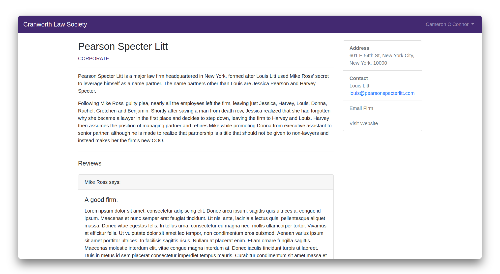
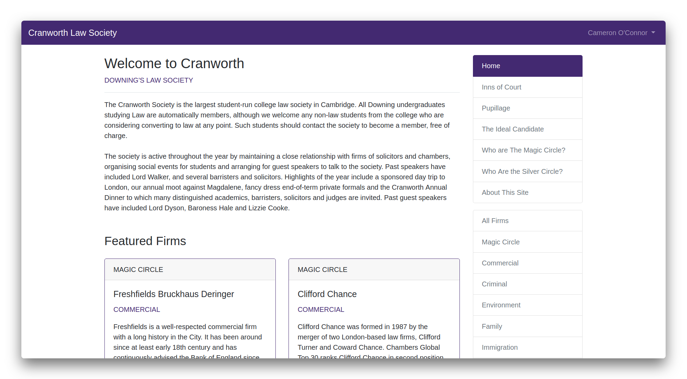

Cranworth Law Society Website
Web App
I created a web application using Django to serve Downing College's Cranworth Law Society website.
I created a web application using Django to serve Downing College's Cranworth Law Society website.
Downing College is widely known as Cambridge’s “Law College”, with more law students than almost any other college, and a number of high-profile law fellows. Downing has its own law society, named Cranworth, which organises talks and helps students find success in their careers.
The society president wanted a website to serve as a repository for important information and recruitment data, with access restricted to only the society’s members.
The natural solution would be to use a more generic CMS, such as WordPress or Joomla, however there are some issues with this. The website’s main purpose is to hold information about law firms - this information is held in a specific format (e.g. with attributes ‘logo’, ‘description’, ‘category’), and this information must be easily updatable, ideally without changing the plain text to ensure consistency.
Restricting access to users authenticated with Raven is fairly easy with Apache plugins, however specifying a smaller subset of allowed users, and allowing this list to be easily edited by a law student, is somewhat more challenging.
Given previous experience, I concluded that a Django app would be the best way to proceed.
Users are first invited to log in using Raven. If they are registered as a society member, they are met with the homepage; else a suitable error message is shown.

Users can view a list of all firms, and sort this list by category. Clicking on a firm brings up the firm detail page, which includes important information, as well as reviews which previous interns/employees have left of this firm. Static pages are generated automatically. Featured firms for the homepage are randomised dynamically.
The web application backend was developed using Django, because it’s quite nice, and the UI is built using Bootstrap. To enable students to log in with their Cambridge-issued Raven credentials, django-ucamwebauth is used as an authentication backend. The Django backend connects to a MySQL instance, and is deployed to the SRCF’s webserver ‘sinkhole’ using uwsgi and a series of Apache RewriteRules to enable reverse-proxy to a local port. The Python backend executes in a Python 3.5 virtualenv.

The Downing JCR RBS is a web app to manage Downing College's yearly student-run room ballot.
Read More
I'm creating a native mobile application for iOS and Android for Downing College's 2019 May Ball.
Read More
I created a web application using Django to serve Downing College's Cranworth Law Society website.
Read More View on GitHub
View on GitHub
 Visit Site
Visit Site